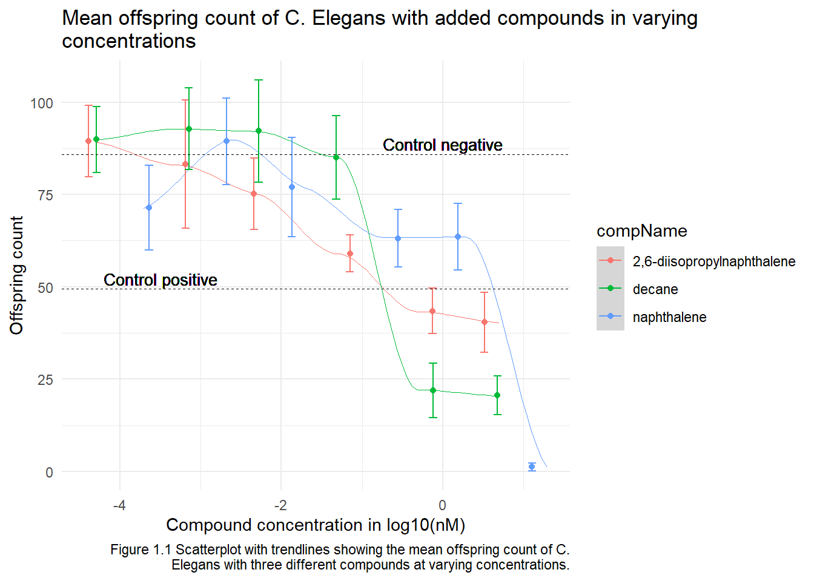

Chapter 1 Reproducible Research
As part of assignment 1 from the DSFB2 Workflows course.
1.1 Excel’s downsides
1.1.1 Inspecting an Excel file
As part of assignment 1.1 I was asked to review this file, by opening the file in Excel. The experimental condition ‘ControlVehicleA’ stood out to me. It appears to be the same as the ControlPositive but with less Ethanol. I’m guessing this shows the experimental conditions without the experimental compounds which would mean the compounds have been diluted in ethanol. There are also extra sheets with lists of inputs, logs of changes and input examples. I’m not sure what the difference in purpose is between the ExpLookup sheet and the Input example sheet. Three different compounds have been tested, 2,6-diisopropylnaphthalene, decane and naphthalene. The positive control for this experiment uses 1.5% ethanol in S-medium. The negative control for this experiment uses just S-medium without an added compound.
Next up, the file was opened in R and the data types per column were checked, these seemed to differ from the expectations.
# Read the excel file
CE.LIQ.FLOW.062_Tidydata <- read_excel(
"data-raw/data011/CE.LIQ.FLOW.062_Tidydata.xlsx")The column RawData was recognized as a double while I’d expect an integer, compName was a character while I expected a factor and compConcentration was also character while it should be a double. It had not been assigned correctly. For further analysis the types were changed to the correct ones using the following code.
# The compConcentration has to be turned into a numeric value
CE.LIQ.FLOW.062_Tidydata$compConcentration <-
as.double(CE.LIQ.FLOW.062_Tidydata$compConcentration)
# The RawData has to be turned into an integer
CE.LIQ.FLOW.062_Tidydata$RawData <- as.integer(CE.LIQ.FLOW.062_Tidydata$RawData)
# Turn the data into a tibble
CE.LIQ.FLOW.062_tbl <- as.tibble(CE.LIQ.FLOW.062_Tidydata)
# The compName's have to be turned into a factor
# Create a vector with the levels
compName_factor <- c("2,6-diisopropylnaphthalene", "decane", "naphthalene",
"Ethanol", "S-medium")
# Use the levels to create the factor
CE.LIQ.FLOW.062_tbl$compName <- factor(CE.LIQ.FLOW.062_tbl$compName,
levels = compName_factor)
# Check if it worked
# str(CE.LIQ.FLOW.062_tbl) # it did!1.1.2 Creating the scatterplot
Now that the columntypes are corrected the data can be used to create a scatterplot. The assignment said to put the compConcentration on the x-axis, the DataRaw counts on the y-axis and to assign a colour to each level in compName. It also asked to assign a different symbol to each level in the expType variable. Since the compUnit of the controls are not nM but percentages, they have been added as dashed lines instead of measured values. This means the different shapes for expType variables are not neccessary since only “experiment” is shown out of the possible ExpType values.
In the assignment the initial scatterplot was followed by a question about the x-axis, “When creating the plot under C), what happened with the ordering of the x-axis labels. Explain why this happens.”. The compConcentration had already been changed to the correct type in the previous code chunk, so nothing went wrong when creating the scatterplot. Had the type not been changed beforehand, the x-axis would have been in random orders because they were seen as characters instead of doubles. The x-axis is shown with a log10 transformation and slight jitter has been added for better readability.
A few details were added on top of the given assignment. Each compound got it’s own colour, the standard deviations have been added as errorbars and the control values have been added as dashed lines for comparison. The resulting plot is shown in figure 1.1.
# Get the average counts per compound per concentration, keep the expType variable too
CE.LIQ_summ <- CE.LIQ.FLOW.062_tbl %>% group_by(compName, compConcentration, expType) %>%
summarize(mean_counts = mean(RawData, na.rm = TRUE),
stdev_counts = sd(RawData, na.rm = TRUE))
# Create a tibble containing only the data used for the graph
CE.LIQ_summ_exp <- CE.LIQ_summ %>% filter(expType == "experiment")
# Create the scatterplot
CE.LIQ_summ_exp %>% ggplot(aes(x = log10(compConcentration) # log10 as suggested in question F
, y = mean_counts)) +
geom_smooth(aes(group=compName, color = compName), span= .5, size=0.2) +
geom_point(aes(color = compName),
position = graph_jitter(0.2)) +
geom_errorbar(aes(ymin=mean_counts-stdev_counts, ymax=mean_counts+stdev_counts,
color = compName),
width=.1, position = graph_jitter(0.2)) +
labs(title = str_wrap("Mean offspring count of C. Elegans with added compounds
in varying concentrations", 70),
y = "Offspring count",
x = "Compound concentration in log10(nM)",
caption = graph_cap("Figure 1.1 Scatterplot with trendlines showing the mean offspring
count of C. Elegans with three different compounds at
varying concentrations.")) +
geom_hline(yintercept = 85.9, linetype = "dashed", size = 0.2) + # Shows control negative
geom_text(aes(0,85.9, label = "Control negative", vjust=-0.3), size = 3.5) +
geom_hline(yintercept = 49.4, linetype = "dashed", size = 0.2) + # Shows control positive
geom_text(aes(-3.5,49.4, label = "Control positive", vjust=-0.3), size = 3.5) +
theme_minimal()
1.1.3 Normalize for the negative control
In order to see how much the offspring count improved or decreased relatively to the negative control baseline the data must be normalized. To do this we adjust the negative control to a value of 1 and adjust the other values in the same way. In this case that means dividing by 85.9. The scatterplot was created again with the new normalized data, further settings stayed the same, the result is shown in figure 1.2.
# Check the mean value of controlNegative
# view(CE.LIQ_summ) # It's 85.9
# Add the column with normalized average counts
CE.LIQ_summ_norm <- CE.LIQ_summ_exp %>% mutate(norm_counts = mean_counts/85.9,
norm_stdev = stdev_counts/85.9)
CE.LIQ_summ_norm %>% ggplot(aes(x = log10(compConcentration), # log10 as requested in question F
y = norm_counts)) +
geom_smooth(aes(group = compName, color = compName), span=.5, size = 0.2) +
geom_point(aes(color = compName), position = graph_jitter(0.15)) +
geom_errorbar(aes(ymin=norm_counts-norm_stdev, ymax=norm_counts+norm_stdev,
color = compName), width=.1, position = graph_jitter(0.15)) +
labs(title = str_wrap("Mean offspring count of C. Elegans with added compounds
in varying concentrations", 70),
y = "Offspring count relative to negative control",
x = "Compound concentration in log10(nM)",
caption = graph_cap("Figure 1.2 Scatterplot with trendlines showing the mean offspring
count of C. Elegans with three different compounds at varying
concentrations. Normalized to negative control == 1.")) +
geom_hline(yintercept = 1, linetype = "dashed", size = 0.2) + # Show control negative
geom_text(aes(0,1, label = "Control negative", vjust=-0.3), size = 3.5) +
geom_hline(yintercept = 0.57508731, linetype = "dashed", size = 0.2) + # Show control positive
geom_text(aes(-3.5,0.57508731, label = "Control positive", vjust=-0.3), size = 3.5) +
theme_minimal()
1.1.4 Statistical analysis
In order to learn wether there is indeed an effect of the different compounds a few tests need to be performed. Starting with the Shapiro-Wilk test to check the normality of the data. Followed by an ANOVA with the different concentrations as added variable. To see the actual difference, the analysis should be finished with a Post hoc test like Tukey.
1.2 Repita criteria
1.2.1 Criteria for reproducibility
In this first part of assignment 1.2 we will look at ‘Repita’ criteria. The criteria are used to check for the reproducibility of scientific research articles. In table 1.1 the different criteria are shown with a definition and the type of response it calls for. In order to further understand and apply these criteria I will look for a research article and check if this article follows the ‘Repita’ guidelines as shown in table 1.
# Create the different variables needed for the repita criteria table
Transparency_Criteria <- c("Study Purpose",
"Data Availability Statement",
"Data Location",
"Study Location",
"Author Review",
"Ethics Statement",
"Funding Statement",
"Code Availability")
Definition <- c("A concise statement in the introduction of the article, often in the last paragraph, that establishes the reason the research was conducted. Also called the study objective.",
"A statement, in an individual section offset from the main body of text, that explains how or if one can access a study’s data. The title of the section may vary, but it must explicitly mention data; it is therefore distinct from a supplementary materials section.",
"Where the article’s data can be accessed, either raw or processed.",
"Author has stated in the methods section where the study took place or the data’s country/region of origin.",
"The professionalism of the contact information that the author has provided in the manuscript.",
"A statement within the manuscript indicating any ethical concerns, including the presence of sensitive data.",
"A statement within the manuscript indicating whether or not the authors received funding for their research.",
"Authors have shared access to the most updated code that they used in their study, including code used for analysis.")
Response_Type <- c("Binary",
"Binary",
"Found Value",
"Binary;Found Value",
"Found Value",
"Binary",
"Binary",
"Binary")
# Turn the variables into one dataframe
repita_criteria <- data.frame(Transparency_Criteria,
Definition,
Response_Type)
# Use the dataframe to create the table
repita_criteria %>% kable(col.names = gsub("_", " ", names(repita_criteria)),
caption = "Table 1.1 The repita criteria as given in portfolio assignment 1.2 in [lesson 1 of the reader](https://lesmaterialen.rstudio.hu.nl/workflows-reader/represintro.html).")| Transparency Criteria | Definition | Response Type |
|---|---|---|
| Study Purpose | A concise statement in the introduction of the article, often in the last paragraph, that establishes the reason the research was conducted. Also called the study objective. | Binary |
| Data Availability Statement | A statement, in an individual section offset from the main body of text, that explains how or if one can access a study’s data. The title of the section may vary, but it must explicitly mention data; it is therefore distinct from a supplementary materials section. | Binary |
| Data Location | Where the article’s data can be accessed, either raw or processed. | Found Value |
| Study Location | Author has stated in the methods section where the study took place or the data’s country/region of origin. | Binary;Found Value |
| Author Review | The professionalism of the contact information that the author has provided in the manuscript. | Found Value |
| Ethics Statement | A statement within the manuscript indicating any ethical concerns, including the presence of sensitive data. | Binary |
| Funding Statement | A statement within the manuscript indicating whether or not the authors received funding for their research. | Binary |
| Code Availability | Authors have shared access to the most updated code that they used in their study, including code used for analysis. | Binary |
1.2.2 The article
Plosone was used to find a suitable article. The found article is a primary article describing emperical scientific findings by Bruckner et al. (2022). The focus is on how microbiotas play a role in developmental programs. Altered microbiota composition appears to be linked to neurodevelopmental conditions such as autism spectrum disorder. One of the findings described how the microbiota can influence forebrain neurons. Forebrain neurons are required for normal social behavior and localization of forebrain microglia.
The study uses zebrafish which were kept at 28°C with a 14/10 light/dark cycle. For the controlgroup conventionalized (CVZ) fish were used. The experimental condition consisted of germ-free (GF) fish. These fish were made germ-free and therefore did not have their microbiota. When the fish were older (7 dpf) they were inoculated with normal microbiota (ex germ-free or XGF) and their optomotor respons was tested. Once the fish were adults (14 dpf) their social behavior was tested.
The social behavior was assessed through a dyad assay for postflexion larval and adult zebrafish. For each condition a pair of siblings were placed in isolated tanks and allowed to interact for 10 minutes via transparent tank walls. Social interaction was defined as the average relative distance from the divider and the percentage of time spent orienting at 45° to 90°. These parameters were measured and analyzed using computer vision software written in Python (available at https://github.com/stednitzs/daniopen). Compared to the CVZ siblings, the GF larvae spent significantly less time than in close proximity to and oriented at 45 to 90° to the stimulus fish. These results show that an intact microbiota is required early for later development of normal social behavior.
Aside from the social behavior, the study also looked at optomotor responses. It is possible that the microbiota influences circuitry underlying the early vision and locomotion required for social behavior. To address this possibility, the vision and locomotion were assayed by comparing kinetics of the optomotor response to virtual motion in GF larvae and CVZ controls. Optomotor response was assessed using a “virtual reality” system for assessing zebrafish behavior, measuring swim response in larvae. A visual stimulus was projected on a screen underneath the dishes for 20 seconds and consisted of concentric rings moving toward the dish center, followed by a 20-second refractory period. Responses are the average of 46 to 59 stimulus trials per fish, presented over 1 hour. In this part of the study, no significant difference were found between the GF and CVZ fish. This suggests that the microbiota influences circuits specific to social behavior directly, rather than by modulating vision or locomotion.
The results demonstrate that the microbiota influences zebrafish social behavior by stimulating microglial remodeling of forebrain circuits during early neurodevelopment. This conclusion suggests pathways for new interventions in multiple neurodevelopmental disorders.
1.2.3 The reproducibility
To better understand the criteria (table 1.) they will be applied to the found article. The results can be found in table 1.2. While answering this assignment I noticed how this is not as black and white as I thought. For example with the study location. At first I thought it was stated, because University of Oregon came back quite a few times, looking at it more closely it was not clear if that was the actual study location.
# Create the different variables needed for the article check table
Score <- c("TRUE",
"TRUE",
"[Link](https://figshare.com/projects/Bruckner_et_al_Data/136756)",
"FALSE",
"Non professional",
"TRUE",
"TRUE",
"FALSE")
Explanation <- c("In the second to last paragraph of the introduction the study objective is described.",
"On the left-hand side of the webpage the \"Accesibble Data\" can be found",
"The data can be accessed through the given link, found under the \"Accesibble Data\" header.",
"The origin of the zebrafish has been given. The workplace of the authors has also been given (University of Oregon) but the location where the research has been performed is not speficially stated anywhere in the article. ",
"Only the email adresses of P. Washbourne and J.S. Eisen were given. Both were part of the funding acquisition. The contact information of the researchers has not been given.",
"There is an ethics statement in the methods paragraph.",
"The funding is stated under the abstract.",
"The data analysis is explained but the code has not been shared.")
# Turn the variables into one dataframe
article_repita_check <- data.frame(Transparency_Criteria, Score, Explanation)
# Use the dataframe to create the table
article_repita_check %>% kable(col.names = gsub("_", " ", names(repita_criteria)),
caption = "Table 1.2 The score for each repita criterium when looking at the research done by Bruckner et al.(2022)")| Transparency Criteria | Definition | Response Type |
|---|---|---|
| Study Purpose | TRUE | In the second to last paragraph of the introduction the study objective is described. |
| Data Availability Statement | TRUE | On the left-hand side of the webpage the “Accesibble Data” can be found |
| Data Location | Link | The data can be accessed through the given link, found under the “Accesibble Data” header. |
| Study Location | FALSE | The origin of the zebrafish has been given. The workplace of the authors has also been given (University of Oregon) but the location where the research has been performed is not speficially stated anywhere in the article. |
| Author Review | Non professional | Only the email adresses of P. Washbourne and J.S. Eisen were given. Both were part of the funding acquisition. The contact information of the researchers has not been given. |
| Ethics Statement | TRUE | There is an ethics statement in the methods paragraph. |
| Funding Statement | TRUE | The funding is stated under the abstract. |
| Code Availability | FALSE | The data analysis is explained but the code has not been shared. |
1.3 Open source code
In this second part of assignment 1.2 we’ll be looking at the code from an existing study. The focus will be on understanding the code, noting what it tries to achieve, the readability, reproducibility, fixing errors, etc.
1.3.1 The article
The article used for this assignment had to live up to a few criteria. First up, the data had to be analysed using R code. This code and the dataset had to be available. The chosen article is “Mental Health Impacts in Argentinean College Students During COVID-19 Quarantine” by López Steinmetz et al. (2021). The study aimed to analyze differences in mental health in college students from Argentina who were exposed to different spread-rates of COVID-19. They also wanted to analyze between group differences in mental health indicatores at four different quarantine sub-periods.
To do this a cross-sectional design was used. The sample included 2687 college students and the data was collected online during the Argentinean quarantine. They used a one-way between-groups ANOVA with Tukey’s post hoc test for the analysis.
The results showed that the center and most populated area only differed in psychological well-being and negative alcohol related consequences, but not in the other indicators. For the sub-periods there were differences in psychological well-being, social functioning and coping, psychological distress, and negative alcohol-related consequences. Negative alcohol-related consequences were the only MHS indicator improving over time. This worsened mean mental health suggests that quarantine and its extensions contribute to negative mental health impacts.
1.3.2 The code
The code, as well as the dataset, for the study were made available through OSF. The original can be found here and the version with my adjustments can be found at the bottom of this page. The dataset and the code were added to the repository as well. After reading the code it appears to consist of a few parts.
- Reference to the manuscript
- Loading the data and packages
- Methods in general
- Sample size
- Distribution by sex, also noted in percentages
- Mean, median and stdev of the age of the students
- Distribution by province in percentages
- Methods for data analysis
- Test of skewness per mental health indicator
- Test or Kurtosis per mental health indicator
- with criteria and criteria reference
- Division based on region for first aim
- Division based on sub-periods for second aim
- Results for aim 1 (differences in MHS based on region)
- Anova per mental health indicator
- Summary
- Plot
- TukeyHSD test
- Plot of Tukey HSD
- Significant differences
- Mean and stdev for indicator per region
- Anova per mental health indicator
- Results for aim 2 (differences in MHS based on sub-period)
- Anova per mental health indicator
- Summary
- Plot
- TukeyHSD test
- Plot of Tukey HSD
- Significant differences
- Mean and stdev for indicator per sub-period
- Plot with means per sub-period and 95% confidence interval
- Anova per mental health indicator
The code is used to make the data clear and tidy by first noting details like sample size, distributions in percentages and tests of skewness. Then it moves on to perform statistical tests for the two different aims of the study. It shows the significant differences and creates plots for the second aim.
It was very easy to read the code, I would give it a 5/5 on readability. It was made especially easy by the clear headers and comments.
1.3.3 Excuting the code
To further inspect the code we will execute it on the dataset given by the study. To this we change one word in the data set in order to link the dataset as it is downloaded to the project. To this the word “clipboard” under comment “Load the dataset” will be changed into raw-data/data012/dataset.xlsx, the location of the downloaded dataset. Errors will be noted and the code will be changed accordingly.
1.3.3.1 Changes and errors when executing
- The original code uses read.table and the clipboard to load the data. This can very quickly be done wrong. To fix this the readxl package was added and the excel file was added using table<-read_excel(“data-raw/data012/dataset.xlsx”).
- “Error in model.frame.default(formula = table$PSYCH.WELLBEING ~ table$REGIONS,:invalid type (NULL) for variable ’table$PSYCH.WELLBEING_. In the table the column”PSYCH WELLBEING” uses a space instead of a period. This also happens for other column names. To change this colnames(table) <- str_replace_all(colnames(table), ” “,”.”) was added before testing skewness.
- The rest of the code stayed the same. To make the knitting of this rmarkdown easier the code has been adjusted to only look at “PSYCH.WELLBEING” as an example. All other indicators would have been analysed in the exact same manner.
1.3.4 Effort scoring
Thanks to the great readability and consistency of the code it was very easy to reproduce. The only issue was adjusting the columnnames to use periods instead of spaces which was easily fixed. Therefore the score is a 5/5 on reproducibility.
Read the code including my adjustments
# R Code for the manuscript entitled:
# "Mental health impacts in Argentinean college students during COVID-19 quarantine".
# López Steinmetz L.C., Leyes C.A., Dutto Florio M.A., Fong S.B., López Steinmetz R.L. & Godoy J.C.
##########################################################################
################## LOAD THE DATASET & PACKAGES ###########################
##########################################################################
# Load the dataset
table<-read_excel("data-raw/data012/dataset.xlsx") # Changed by Mirthe Klaassen for this portfolio assignment
summary(table)## SUB PERIODS IN PRE AND POST REGIONS PROVINCE
## Length:2687 Length:2687 Length:2687
## Class :character Class :character Class :character
## Mode :character Mode :character Mode :character
##
##
##
## SEX AGE PSYCH WELLBEING SOC FUNC AND COPING
## Length:2687 Min. :18.00 Min. :0.000 Min. :0.000
## Class :character 1st Qu.:20.00 1st Qu.:2.000 1st Qu.:0.000
## Mode :character Median :22.00 Median :3.000 Median :2.000
## Mean :22.74 Mean :3.086 Mean :2.149
## 3rd Qu.:24.00 3rd Qu.:5.000 3rd Qu.:4.000
## Max. :39.00 Max. :6.000 Max. :6.000
## K10 BDI STAIR YAACQ ISO
## Min. :10.0 Min. : 0 Min. : 1.00 Min. : 0.000 Min. : 1.00
## 1st Qu.:19.0 1st Qu.:10 1st Qu.:21.00 1st Qu.: 0.000 1st Qu.:22.00
## Median :25.0 Median :16 Median :29.00 Median : 3.000 Median :32.00
## Mean :25.5 Mean :18 Mean :29.24 Mean : 3.699 Mean :34.56
## 3rd Qu.:32.0 3rd Qu.:25 3rd Qu.:38.00 3rd Qu.: 6.000 3rd Qu.:46.00
## Max. :49.0 Max. :57 Max. :58.00 Max. :21.000 Max. :82.00# Load the packages:
library(moments)
library(gplots)
library(readxl) ## Added by Mirthe Klaassen for this portfolio assignment
##########################################################################
###################### METHODS ###########################################
##########################################################################
###### SUB-TITLE: METHOD > Sample and procedure
# SAMPLE N = 2687
# Distribution by sex:
table(table$SEX)##
## man other woman
## 473 22 2192# Absolute frequencies: Women = 2192, Men = 473, Other = 22
prop.table(table(table$SEX))*100##
## man other woman
## 17.603275 0.818757 81.577968# Percentages: Women = 81.577968%, Men = 17.603275%, Other = 0.818757%
# Central tendency measures by age (total sample)
# mean
mean(table$AGE)## [1] 22.74023# Mean age = 22.74023
# standard deviation
sd(table$AGE)## [1] 3.635612# sd age = 3.635612
# median
median(table$AGE)## [1] 22# median age = 22
# Distribution by provinces
prop.table(table(table$PROVINCE))*100##
## CABA CBA JUJ PCIAB SAL STACR TDELF
## 11.9464086 39.0026051 6.6989207 31.9315221 7.1082992 0.9676219 2.3446223# JUJ (JUJUY) = 6.6989207%
# SAL (SALTA) = 7.1082992%
# CBA (CÓRDOBA) = 39.0026051%
# STACR (SANTA CRUZ) = 0.9676219%
# TDELF (TIERRA DEL FUEGO) = 2.3446223%
# CABA (CIUDAD AUTÓNOMA DE BUENOS AIRES) = 11.9464086%
# PCIAB (PROVINCIA DE BUENOS AIRES) = 31.9315221%
###### SUB-TITLE: METHOD > Data analysis
# Adjustment of colnames to be the same as the names in the code == added by Mirthe Klaassen for this assignment
colnames(table) <- str_replace_all(colnames(table), " ", ".")
### To test Skewness and Kurtosis # Criteria: range of acceptable values or near to (-3 and +3; Brown, 2006).
# Reference: Brown T.A. (2006). Confirmatory factor analysis for applied research. New York: Guilford Press.
# PSYCH.WELLBEING
skewness(table$PSYCH.WELLBEING)## [1] -0.05214941# skewness PSYCH.WELLBEING = -0.05214941
kurtosis(table$PSYCH.WELLBEING) ## [1] 1.951112# kurtosis PSYCH.WELLBEING = 1.951112
### For analyses corresponding to the first aim, we divided the entire sample into four groups:
table(table$REGIONS)##
## CENTER MOST POPULATED NORTH SOUTH
## 1048 1179 371 89# NORTH = 371
# CENTER = 1048
# SOUTH = 89
# MOST POPULATED = 1179
### For analyses corresponding to the second aim, we divided the entire sample into four groups:
table(table$SUB.PERIODS.IN.PRE.AND.POST)##
## 1. ONE WEEK PRE 2. TWO WEEK PRE 3. ONE WEEK POST
## 1508 525 364
## 4. REMAINING WEEKS POST
## 290# first week pre-quarantine extension (ONE WEEK PRE) = 1508
# second week pre-quarantine extension (TWO WEEK PRE) = 525
# first week post-quarantine extension (ONE WEEK POST) = 364
# remaining weeks post-quarantine extension (REMAINING WEEKS POST) = 290
##########################################################################
###################### RESULTS ###########################################
##########################################################################
##########################################################################
####################### AIM 1 ############################################
##########################################################################
### Differences in mental health aspects (both general and specific) by four regions
table$PSYCH.WELLBEING## [1] 6 2 3 4 0 4 0 4 2 2 2 3 0 4 4 5 3 6 3 5 2 6 5 5 5 2 3 6 6 3 4 4 2 1 4 0 2
## [38] 5 0 1 4 5 4 1 6 3 5 5 0 5 5 6 3 3 5 4 3 4 0 6 4 1 5 2 2 1 5 2 3 4 4 4 1 2
## [75] 4 1 5 4 5 6 1 3 2 4 2 2 2 6 5 2 2 2 4 5 4 4 4 5 6 3 3 2 2 2 4 5 1 1 5 0 0
## [112] 5 2 2 5 3 3 1 0 4 4 2 6 1 6 4 1 2 3 4 4 4 6 1 2 0 1 3 6 2 6 6 5 2 6 4 4 2
## [149] 3 3 2 4 3 5 1 2 0 4 3 2 1 3 6 1 5 0 2 4 2 1 1 3 1 1 5 4 4 1 1 0 6 3 1 5 5
## [186] 0 1 3 3 0 3 6 1 0 1 3 1 3 4 2 4 2 3 0 3 4 5 1 4 2 3 5 2 2 6 5 1 1 1 1 5 1
## [223] 0 0 1 0 0 3 6 6 1 4 3 3 2 0 3 2 1 6 6 2 5 0 3 5 5 2 2 4 4 1 6 0 1 6 2 1 5
## [260] 1 0 0 4 5 2 4 5 6 6 5 3 5 1 1 5 5 5 4 1 1 1 2 3 6 5 1 0 6 3 1 1 1 3 2 4 6
## [297] 3 3 1 2 4 5 3 2 4 4 4 6 3 2 5 3 3 1 5 6 6 5 5 2 2 2 2 0 4 4 4 2 2 5 4 0 4
## [334] 4 0 1 0 5 1 3 0 0 4 6 2 4 0 1 4 3 4 2 1 3 5 4 2 6 0 0 4 1 5 6 3 0 2 5 2 6
## [371] 5 2 3 6 3 4 3 5 2 5 2 1 3 4 5 5 1 4 0 0 0 0 3 2 3 6 2 3 5 0 3 6 1 2 6 2 5
## [408] 4 2 4 1 4 6 2 3 4 2 1 4 2 2 2 6 3 3 0 4 1 0 0 0 4 5 2 2 1 5 0 4 3 4 1 4 3
## [445] 5 5 3 1 0 2 2 1 3 2 1 5 1 3 0 6 3 4 4 3 6 2 2 3 6 0 4 0 2 1 1 5 4 5 3 0 1
## [482] 3 6 4 1 4 4 2 6 6 5 3 4 2 0 6 0 0 5 0 0 5 0 3 1 3 2 0 3 2 1 4 1 2 4 3 2 6
## [519] 4 4 0 2 4 3 4 2 4 1 3 3 2 4 4 3 0 5 2 0 1 4 0 3 0 2 2 4 3 4 5 4 6 2 2 4 5
## [556] 2 2 2 6 2 2 4 3 6 6 4 6 5 1 1 4 3 0 1 4 4 1 2 4 0 4 1 2 6 0 2 1 3 1 4 0 1
## [593] 3 3 3 4 6 4 0 3 5 3 2 3 1 3 0 3 0 2 0 3 4 2 2 2 4 2 6 6 3 5 6 1 3 1 2 6 4
## [630] 0 3 0 2 3 5 2 4 0 5 6 4 3 4 5 4 2 2 1 0 1 6 1 4 2 4 2 5 4 3 6 3 2 3 1 5 2
## [667] 3 1 2 0 6 0 4 0 3 4 4 0 3 2 0 2 4 3 2 3 1 2 0 1 3 0 0 5 0 2 4 2 6 3 3 0 5
## [704] 0 5 3 2 3 4 1 2 1 5 4 5 4 5 2 4 5 5 6 4 5 3 0 5 4 4 4 6 6 6 3 6 3 4 3 3 6
## [741] 5 6 5 4 5 5 2 5 5 4 2 5 6 4 3 2 1 3 5 0 5 5 6 2 1 4 3 0 3 1 6 5 4 2 6 1 3
## [778] 3 1 4 1 4 3 4 6 2 2 5 5 4 3 0 4 3 2 3 2 0 5 2 0 4 1 0 2 1 6 2 1 5 0 3 5 4
## [815] 0 0 4 4 1 1 1 5 5 3 2 0 6 2 4 3 1 4 2 2 6 5 0 1 1 5 3 2 2 3 4 1 4 4 4 3 2
## [852] 4 2 2 5 6 6 6 3 0 5 4 4 1 5 0 5 6 1 2 3 2 3 6 2 5 1 2 3 4 2 5 4 2 4 3 1 0
## [889] 0 1 5 3 3 6 3 0 2 3 0 5 5 2 4 6 4 3 6 0 2 0 6 5 2 6 1 4 4 3 1 5 2 0 4 0 4
## [926] 4 1 4 2 4 5 0 3 3 4 3 6 4 4 3 1 3 6 5 1 0 3 5 1 2 2 3 1 1 1 1 3 4 5 0 1 0
## [963] 1 5 4 4 1 3 4 2 5 2 3 3 2 1 6 6 4 4 2 5 3 3 4 6 2 3 3 0 2 6 4 5 6 3 6 6 1
## [1000] 5 2 4 1 1 5 1 3 2 5 3 1 0 5 1 5 3 5 4 2 1 2 2 6 0 3 0 4 6 4 3 0 3 3 3 1 1
## [1037] 4 3 3 4 0 4 4 2 5 5 0 4 4 0 2 0 6 1 3 3 6 0 0 3 2 3 6 3 3 6 1 4 3 2 5 4 4
## [1074] 1 5 2 3 2 2 5 5 5 4 5 6 3 3 4 3 6 2 6 5 5 1 0 3 3 1 6 2 4 5 5 3 4 4 0 3 0
## [1111] 0 3 3 4 3 1 1 2 1 4 1 4 0 2 1 3 2 2 6 1 3 2 1 3 2 1 2 1 2 0 3 4 1 6 1 3 2
## [1148] 5 2 4 1 3 1 0 0 2 1 3 4 0 0 4 1 5 4 3 2 4 5 4 5 5 3 3 6 1 0 4 2 3 4 2 2 0
## [1185] 5 4 6 1 2 6 1 0 5 3 5 3 4 3 2 1 5 5 5 2 5 3 1 5 6 6 4 3 3 1 3 3 6 6 3 4 4
## [1222] 2 3 0 4 2 0 4 4 1 2 2 2 3 1 0 1 6 5 1 5 3 6 6 1 4 1 6 4 1 1 4 2 2 3 5 0 1
## [1259] 5 4 6 2 0 0 3 1 3 4 6 0 4 2 3 0 3 2 6 6 0 2 0 5 0 2 4 4 5 2 4 1 3 4 5 4 3
## [1296] 6 3 4 0 3 4 4 2 0 4 2 5 3 5 1 0 6 0 0 2 6 2 0 1 1 3 1 0 4 5 3 1 2 4 3 2 1
## [1333] 0 4 5 1 2 6 3 3 3 4 4 3 0 4 6 2 2 3 6 6 1 4 1 5 3 6 4 2 3 6 3 6 4 2 1 6 1
## [1370] 3 2 1 1 4 3 1 4 4 5 3 6 0 5 1 4 5 0 0 1 3 2 0 1 2 2 3 5 3 4 3 6 2 4 0 0 0
## [1407] 3 3 1 2 3 3 2 2 5 3 2 1 0 4 5 3 6 2 3 2 0 0 0 0 6 5 2 2 5 4 2 4 5 0 5 5 1
## [1444] 2 1 2 6 2 4 0 6 0 3 4 3 6 0 2 3 2 4 1 4 0 2 5 1 4 4 2 2 2 4 3 0 6 3 0 3 5
## [1481] 1 5 3 2 2 6 0 2 4 6 2 3 6 4 3 3 2 3 1 3 4 6 6 5 3 1 6 5 3 6 3 6 2 6 2 0 0
## [1518] 4 2 1 2 3 1 0 5 2 2 3 3 6 4 1 5 3 2 3 2 5 1 6 3 1 0 3 6 2 2 4 6 6 4 0 1 5
## [1555] 2 3 5 3 5 6 5 5 3 1 4 5 3 6 5 6 5 1 0 1 4 5 5 4 6 4 2 2 2 5 1 6 5 0 4 2 4
## [1592] 5 4 3 3 4 0 3 2 0 3 1 4 0 6 4 2 5 2 1 3 2 2 3 1 4 1 1 5 6 6 5 5 3 6 1 0 3
## [1629] 3 4 4 2 0 6 3 0 4 6 2 6 3 5 2 3 6 6 0 2 3 2 1 6 2 1 4 2 2 4 2 5 5 5 2 4 4
## [1666] 5 1 0 2 3 5 4 2 6 2 4 1 3 2 2 4 1 3 5 3 3 4 5 6 3 6 4 1 1 4 6 3 2 5 3 3 0
## [1703] 3 3 3 6 1 4 4 5 6 0 3 5 5 5 4 6 3 1 5 5 2 2 6 6 3 2 2 5 2 6 2 3 5 3 1 6 2
## [1740] 6 5 5 6 1 6 1 2 3 1 3 4 5 4 1 4 3 2 5 5 3 3 1 1 2 3 5 6 2 4 4 4 1 1 6 2 4
## [1777] 3 3 4 4 2 3 3 1 2 5 4 5 5 2 4 2 5 1 6 1 5 1 6 2 3 0 2 3 3 0 5 6 1 1 3 3 3
## [1814] 3 4 4 2 5 3 4 4 2 5 2 0 2 6 0 5 5 6 1 4 5 0 5 5 5 5 1 3 1 2 4 5 4 2 6 3 4
## [1851] 1 3 3 0 0 5 4 6 2 6 4 5 3 4 5 1 6 5 3 1 3 3 4 5 1 2 4 3 3 6 2 2 0 0 2 2 6
## [1888] 3 6 3 6 4 0 4 5 3 3 1 0 5 4 2 4 4 2 4 4 0 4 5 4 0 2 1 2 1 1 2 0 3 0 6 2 0
## [1925] 3 2 5 5 3 5 1 1 6 3 5 4 5 6 3 5 5 5 1 0 3 3 4 6 3 5 4 3 4 0 6 0 2 1 3 3 3
## [1962] 3 4 2 0 4 4 6 5 1 3 0 2 3 5 3 2 3 3 1 4 5 3 3 2 3 6 4 2 1 6 0 4 2 0 4 5 2
## [1999] 4 2 2 3 2 4 0 4 1 1 3 4 3 4 3 3 0 4 0 5 5 4 1 1 3 0 4 2 1 5 0 1 1 4 4 5 5
## [2036] 4 3 1 5 3 1 6 4 5 4 0 5 3 2 6 2 6 6 5 1 1 0 3 2 2 4 2 0 3 3 3 5 3 1 5 6 3
## [2073] 1 2 3 5 4 0 0 6 5 3 2 6 6 3 2 4 6 1 1 5 2 6 6 5 4 4 5 0 0 4 5 1 3 2 4 3 3
## [2110] 4 6 6 3 0 2 4 6 0 1 0 5 1 5 0 3 3 6 5 4 6 5 5 3 5 2 1 6 0 3 0 4 6 4 2 2 2
## [2147] 2 1 2 5 3 3 6 5 3 4 5 1 5 5 0 0 5 2 6 6 1 3 2 6 5 5 1 3 6 3 4 1 1 2 6 5 3
## [2184] 2 5 4 5 4 4 1 5 5 6 6 6 5 2 2 3 3 6 2 1 1 5 3 5 0 3 6 4 3 0 5 5 1 5 6 1 6
## [2221] 2 2 2 2 2 5 3 3 1 2 1 0 1 3 2 3 4 5 4 0 3 5 4 5 6 3 6 5 2 3 6 2 5 6 2 5 2
## [2258] 4 5 6 5 3 2 0 0 6 2 1 1 5 6 4 4 6 3 1 5 6 2 2 5 4 3 2 6 0 2 4 1 0 4 6 3 5
## [2295] 4 2 1 3 3 0 3 5 6 6 5 2 4 6 4 5 6 6 5 2 4 4 4 4 4 3 1 5 6 3 4 3 6 1 6 4 5
## [2332] 1 3 5 3 2 3 2 3 3 3 5 0 4 4 4 6 6 5 3 0 4 2 1 5 4 5 3 5 4 5 6 0 4 2 5 2 5
## [2369] 3 5 0 3 3 2 3 2 2 2 3 0 3 5 6 5 5 6 2 4 4 6 2 6 6 1 3 1 3 4 3 2 3 2 5 4 4
## [2406] 6 4 5 2 3 6 1 2 2 5 1 1 6 3 4 2 5 5 4 4 2 3 0 5 2 5 1 1 1 2 6 1 1 4 5 3 3
## [2443] 1 0 4 6 3 5 1 2 6 2 1 1 4 4 5 3 0 5 5 1 4 2 5 2 0 1 4 2 4 5 2 4 1 5 5 2 1
## [2480] 6 1 6 1 3 1 2 4 5 0 3 4 5 3 5 1 4 0 0 6 4 5 6 0 4 4 2 5 4 2 4 6 3 2 2 2 0
## [2517] 4 2 6 3 3 6 6 3 4 2 3 5 3 4 5 1 0 5 0 2 5 3 4 5 0 5 5 1 4 6 6 6 5 4 5 2 1
## [2554] 5 1 0 4 5 4 4 6 3 3 6 2 4 5 2 6 2 2 6 2 4 3 6 1 3 3 4 6 2 5 5 6 0 2 2 5 3
## [2591] 3 6 1 2 6 3 2 3 0 2 3 1 4 3 3 2 4 4 2 1 5 5 3 3 3 2 5 2 0 4 1 3 3 3 6 0 1
## [2628] 1 4 1 2 1 2 6 6 2 2 3 5 2 2 1 4 2 5 4 4 6 4 4 0 4 5 4 5 5 5 6 5 5 5 3 5 3
## [2665] 6 5 2 3 3 4 5 4 5 5 5 4 5 2 5 3 3 5 5 4 6 4 0# PSYCHOLOGICAL WELL-BEING/DISCOMFORT (OF GENERAL HEALTH)
anovaregpsychwellbeing <- aov(table$PSYCH.WELLBEING~table$REGIONS)
summary(anovaregpsychwellbeing)## Df Sum Sq Mean Sq F value Pr(>F)
## table$REGIONS 3 46 15.340 4.569 0.00338 **
## Residuals 2683 9008 3.358
## ---
## Signif. codes: 0 '***' 0.001 '**' 0.01 '*' 0.05 '.' 0.1 ' ' 1plot(anovaregpsychwellbeing)


TukeyHSD(anovaregpsychwellbeing)## Tukey multiple comparisons of means
## 95% family-wise confidence level
##
## Fit: aov(formula = table$PSYCH.WELLBEING ~ table$REGIONS)
##
## $`table$REGIONS`
## diff lwr upr p adj
## MOST POPULATED-CENTER 0.28148855 0.08151381 0.4814633 0.0017158
## NORTH-CENTER 0.22902049 -0.05554103 0.5135820 0.1636105
## SOUTH-CENTER 0.17650527 -0.34355917 0.6965697 0.8191275
## NORTH-MOST POPULATED -0.05246806 -0.33286583 0.2279297 0.9633105
## SOUTH-MOST POPULATED -0.10498327 -0.62278119 0.4128146 0.9540137
## SOUTH-NORTH -0.05251522 -0.60848288 0.5034524 0.9949688plot(TukeyHSD(anovaregpsychwellbeing))
# significant differences
# MOST POPULATED-CENTER p adj 0.0017158 #### MOST POPULATED mean = 3.206107, CENTER mean = 2.924618
tapply(table$PSYCH.WELLBEING,factor(table$REGIONS),mean)## CENTER MOST POPULATED NORTH SOUTH
## 2.924618 3.206107 3.153639 3.101124tapply(table$PSYCH.WELLBEING,factor(table$REGIONS),sd)## CENTER MOST POPULATED NORTH SOUTH
## 1.836446 1.834613 1.838215 1.725774##########################################################################
####################### AIM 2 ############################################
##########################################################################
### Differences in mental health aspects (both general and specific) by four sub-periods of quarantine
# PSYCHOLOGICAL WELL-BEING (OF GENERAL HEALTH)
anovatemppsychwellbeing <- aov(table$PSYCH.WELLBEING~table$SUB.PERIODS.IN.PRE.AND.POST)
summary(anovatemppsychwellbeing)## Df Sum Sq Mean Sq F value Pr(>F)
## table$SUB.PERIODS.IN.PRE.AND.POST 3 83 27.791 8.312 1.68e-05 ***
## Residuals 2683 8971 3.344
## ---
## Signif. codes: 0 '***' 0.001 '**' 0.01 '*' 0.05 '.' 0.1 ' ' 1plot(anovatemppsychwellbeing)


TukeyHSD(anovatemppsychwellbeing)## Tukey multiple comparisons of means
## 95% family-wise confidence level
##
## Fit: aov(formula = table$PSYCH.WELLBEING ~ table$SUB.PERIODS.IN.PRE.AND.POST)
##
## $`table$SUB.PERIODS.IN.PRE.AND.POST`
## diff lwr upr
## 2. TWO WEEK PRE-1. ONE WEEK PRE -0.1360136 -0.37421192 0.1021846
## 3. ONE WEEK POST-1. ONE WEEK PRE 0.2031072 -0.07139874 0.4776132
## 4. REMAINING WEEKS POST-1. ONE WEEK PRE 0.4771883 0.17578682 0.7785898
## 3. ONE WEEK POST-2. TWO WEEK PRE 0.3391209 0.01851552 0.6597262
## 4. REMAINING WEEKS POST-2. TWO WEEK PRE 0.6132020 0.26928754 0.9571164
## 4. REMAINING WEEKS POST-3. ONE WEEK POST 0.2740811 -0.09590843 0.6440706
## p adj
## 2. TWO WEEK PRE-1. ONE WEEK PRE 0.4571940
## 3. ONE WEEK POST-1. ONE WEEK PRE 0.2273681
## 4. REMAINING WEEKS POST-1. ONE WEEK PRE 0.0002823
## 3. ONE WEEK POST-2. TWO WEEK PRE 0.0333276
## 4. REMAINING WEEKS POST-2. TWO WEEK PRE 0.0000283
## 4. REMAINING WEEKS POST-3. ONE WEEK POST 0.2264068plot(TukeyHSD(anovatemppsychwellbeing))
# significant differences
# 4. REMAINING WEEKS POST-1. ONE WEEK PRE p adj 0.0002823
# 3. ONE WEEK POST-2. TWO WEEK PRE p adj 0.0333276
# 4. REMAINING WEEKS POST-2. TWO WEEK PRE p adj 0.0000283
tapply(table$PSYCH.WELLBEING,factor(table$SUB.PERIODS.IN.PRE.AND.POST),mean)## 1. ONE WEEK PRE 2. TWO WEEK PRE 3. ONE WEEK POST
## 3.033156 2.897143 3.236264
## 4. REMAINING WEEKS POST
## 3.510345tapply(table$PSYCH.WELLBEING,factor(table$SUB.PERIODS.IN.PRE.AND.POST),sd)## 1. ONE WEEK PRE 2. TWO WEEK PRE 3. ONE WEEK POST
## 1.823743 1.819344 1.886359
## 4. REMAINING WEEKS POST
## 1.796256# Figure S1:
plotmeans(table$PSYCH.WELLBEING~table$SUB.PERIODS.IN.PRE.AND.POST, main="Fig. S1: Psychological well-being/discomfort by quarantine sub-periods. Mean plot with 95% Confidence Interval", cex.main = 0.8, ylab = "Psychological well-being/discomfort", xlab = "Quarantine's sub periods")
##########################################################################
############################# THE END ####################################
##########################################################################